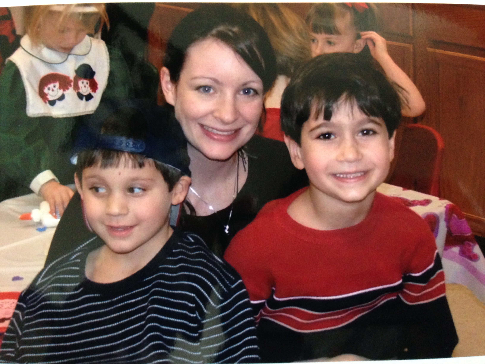
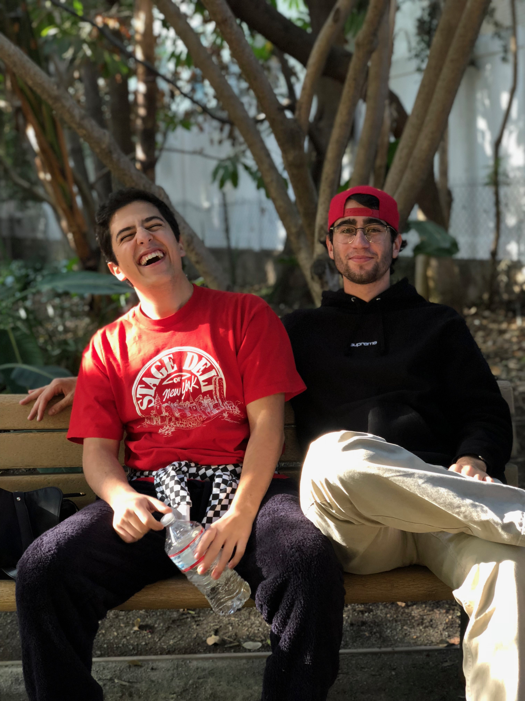
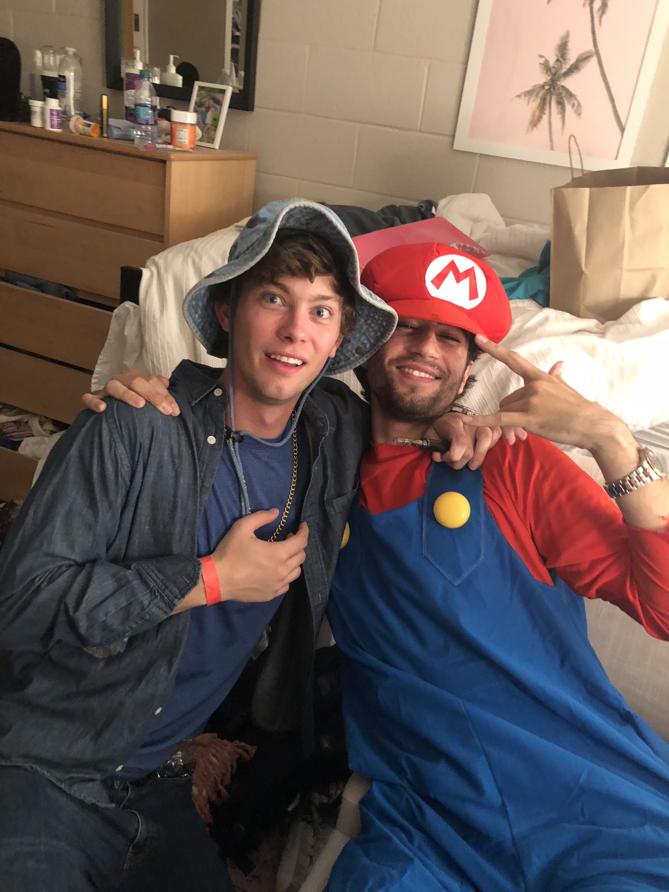

JUSTIN RAYMAN

Growing up, I always loved playing sports. There were few things I would rather do when I got home from school than toss the 'ole pigskin around with the boys in the front yard. I was a pretty big deal in 7th grade. My favorite player of all time is Jason Collins, if you wanna look at his career stats, click here. Besides football, I played:
- Hockey
- Baseball
- Basketball
- Soccer
- Gymnastics
- Pickleball
That's me on the right! Wow, I was a cute kid, huh? This was my sister's 4th birthday, and she ate all the cake and didn't let me have any. What's the point of being the older brother if you don't get all the cake? I still haven't gotten over it.
Me and little bro chillin'. His name is Josiah Rayman; I taught him everything he knows. We both go by J Ray ... yeah, it's kinda awkward. He loves to collect sea shells on family beach trips and taping pictures of pro athletes above his bed.
Here are some more pictures of me growing into my prime:

Me and Fredo posing for some dank senior year pics. This has been my profile picture on Facebook for 2 years, 134 likes. |

It's A Me, Mario! Just kidding, it's still J Ray. This was when I brought my friend Jamison on a date night. Wow, we had a blast. But I still can't believe he didn't wanna dress up as Luigi. |
|---|